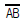
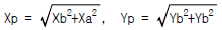
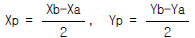
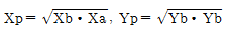
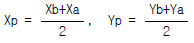
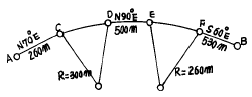

지적산업기사 (2003-03-16 기출문제)
1과목: 지적측량
1. 두 점간의 경사거리 L = 50m, 고저차 h = 0.95m 일 경우 수평거리 D는?
- 44.991m
- 49.991m
- 49.913m
- 50.009m
(정답률: 64%)

2. 시준거리가 100m이고 허용측각 오차를 20"까지 측정하고자 할 때 허용 편심거리는?
- 0.97mm
- 9.70mm
- 0.096mm
- 97.0mm
(정답률: 알수없음)
3. 지적측량과 일반측량에 관한 설명 중 틀리는 것은?
- 지적측량은 소유권을 확정하기 위한 측량이고 일반측량은 공사를 하기 위한 측량이다.
- 지적측량의 성과는 영구히 존속되나 일반측량은 공사준공과 동시에 소멸된다.
- 지적측량은 소유자를 대신하여 행하는 측량이고 일반측량은 그러하지 아니하다.
- 지적측량에서는 기초측량이 필요없고 일반측량에서만 필요하다.
(정답률: 알수없음)
4. 지적삼각보조점의 수평각관시 대회수는?
- 1대회
- 2대회
- 3대회
- 4대회
(정답률: 알수없음)
5. 도근측량의 1등 도선으로 할 수 없는 것은?
- 삼각점간
- 삼각점과 보조삼각점간
- 보조삼각점간
- 삼각점과 2등 도선점간
(정답률: 80%)
6. 평면직각 좌표상의 두점 A(Xa,Ya)와 B(Xb,Yb)를 연결하는 선분

를 2등분하는 점 P의 좌표(Xp,Yp)를 계산하는 식은?



(정답률: 알수없음)
7. 측판측량에서 투사지법은 다음 중 어디에 속하는가?
- 삼점문제
- 전방교회법
- 벳셀법
- 측방교회법
(정답률: 알수없음)
8. 축척 1/500지역에서 측판측량할 경우 구심이 옳은 것은?(단, 도상 허용오차는 0.2㎜임.)
- 도근점 중심에 엄격하게 맞춰야 한다.
- 도근점 중심으로부터 5㎝ 이내의 범위가 좋다.
- 도근점 중심으로부터 8㎝ 이내의 범위가 좋다.
- 도근점 중심으로부터 12㎝ 이내의 범위가 좋다.
(정답률: 알수없음)
9. 축척 1/1200 지역의 도곽신축량이 -3㎜인 지적도에서 면적을 측정할 경우 보정계수는 얼마로 해야 하는가?
- 1.0164
- 1.0150
- 0.9839
- 0.9791
(정답률: 알수없음)
10. 도근측량시 방위각법에 의할 때 2등도선의 방위각 폐색오차의 한계는? (단, n은 폐색변을 포함한 변수임.)
- ± √n 분 이내
- ± 1.5√n 분 이내
- ± 2√n 분 이내
- ± 3√n 분 이내
(정답률: 알수없음)
11. 다음은 지적도의 재작성방법에 대한 설명이다. 옳지 않은 것은?
- 도면의 경계가 불분명한 경우에는 대장을 기준으로 할 수 있다.
- 도곽선에 0.5㎜ 이상의 신축이 있는 경우 보정하여야 한다.
- 직접 또는 간접자사 방법에 의할 수 있다.
- 재작성당시 도면을 기준으로 한다.
(정답률: 알수없음)
12. 교회법에 의하여 지적삼각 보조측량을 실시할 경우 수평각을 관측한 때 삼각형의 내각관측치의 오차 및 기지각과의 오차가 발생하였다. 오차의 배부방법으로 맞는 것은?
- 삼각형 내각관측치의 오차만 배부한다.
- 기지각과의 오차만 배부한다.
- 기지각과의 오차를 먼저 배부하고 남은 오차를 삼각형 두각에 배부한다.
- 삼각형 내각오차를 먼저 배부하고 기지각오차를 배부 한다.
(정답률: 알수없음)
13. 경계점좌표등록부시행지역에서 측량성과와 검사성과에 대한 경계점의 허용오차는?
- ± 5㎝ 이내
- ± 15㎝ 이내
- ± 10㎝ 이내
- ± 20㎝ 이내
(정답률: 알수없음)
14. 측판측량의 앨리데이드로 비탈진거리를 관측시 전후 시준판 안쪽에 새겨진 한 눈금의 간격은 전후 시준판 간격의 얼마 정도인가?
- 1/100
- 1/50
- 1/200
- 1/150
(정답률: 알수없음)
15. 지적도를 재작성하는 방법으로 적합하지 않은 것은?
- 직접자사법
- 간접자사법
- 정밀복사법
- 전자자동제도법
(정답률: 알수없음)
16. 다음 GPS에 대한 설명으로 틀린 것은?
- 정확한 3차원 위치, 고도, 시간정보를 제공
- 전세계적으로 하루 24시간 연속적으로 서비스 제공
- 눈 또는 비가 내리는 기상조건에서는 사용이 불가능
- 전세계적으로 WGS84 좌표계를 사용
(정답률: 알수없음)
17. 측판측량방법으로 세부측량을 실시할 경우 1/1200 지역에서 도상에 영향을 주지 않는 지상거리의 한계는?
- 5cm
- 12cm
- 15cm
- 20cm
(정답률: 67%)
18. 축척 1/1200 지역에서 도곽선의 지상거리를 측정한 결과 각각 399.5m, 399.5m, 499.4m, 499.9m 일 때 도곽선의 보정계수는 얼마인가?
- 1.0020
- 1.0018
- 1.0030
- 1.0025
(정답률: 알수없음)
19. 앨리데이드를 이용하여 두점간의 경사거리와 경사분획을 측정한 결과 경사거리 80m, 경사분획 +15.5인 경우 두점 간의 수평거리는 얼마인가?
- 79.1m
- 79.5m
- 78.1m
- 78.5m
(정답률: 알수없음)
20. 교회법에 의한 지적삼각보조측량에서 2개의 삼각형으로부터 계산한 연결오차의 크기의 한계는?
- 0.20m
- 0.30m
- 0.40m
- 0.10m
(정답률: 알수없음)
2과목: 응용측량
21. 수준측량에서 시점의 지반고가 100m이고, 전시의 총화는 107m, 후시의 총화는 125m일 때 종점의 지반고는?
- 332 m
- 132 m
- 82 m
- 118 m
(정답률: 알수없음)
22. 사진판독의 요소 중 수목의 분류조사에서 가장 중요시 되지 않는 것은?
- 형상
- 패턴
- 질감
- 위치
(정답률: 알수없음)
23. 경사진 갱내에서 트래버스 측량을 실시할 때에 트랜싯의 어느 조정이 잘되어야 하는가?
- 십자선 횡선
- 평반수준기
- 수평축
- 망원경부착수준기
(정답률: 알수없음)
24. 터널측량에 관한 설명으로 틀린 것은?
- 지표측량과 지하측량으로 구분할 수 있다.
- 갱내에서는 기계와 표척 등에 조명이 필요하다.
- 갱내에서의 수준측량은 주로 레벨기와 표척을 이용한다.
- 터널의 길이와 방향은 삼각측량 또는 트래버스에 의한다.
(정답률: 알수없음)
25. 다음 중 갱내에서 사용하는 트랜싯의 구비조건으로 가장 적합하지 않은 것은?
- 조명장치를 구비할 것
- 수직분도반이 전원식일 것
- 구심장치가 고정식일 것
- 상· 하부나사의 식별이 용이할 것
(정답률: 알수없음)
26. 완화곡선의 성질에 대한 설명 중 가장 옳은 것은?
- 완화곡선 시점에서 곡선반경은 무한대이다.
- 완화곡선 종점에서 곡선반경은 0 이다.
- 완화곡선 시점에서 접선은 원호에 가깝다.
- 완화곡선 종점에서 접선은 직선이다.
(정답률: 알수없음)
27. 수갱에서 지상과 지하를 연결하기 위하여 실시하는 수갱추선측량에 대한 설명으로 틀린 것은?
- 수갱구는 통풍이 되지 않게 하여야 한다.
- 깊은 수갱 밑에서는 50‾60Kg의 추를 단다.
- 수갱 밑에서 추선의 위치 결정은 추선이 완전히 멈출 때까지 기다린다.
- 수갱 밑에서는 추를 물이나 기름통 속에 담아 움직이지 않게 하여 위치를 결정한다.
(정답률: 알수없음)
28. 사진기준점측량(항공삼각측량)의 방법에 대한 설명으로 틀린 것은?
- 광속(번들)조정법은 사진좌표를 측정하여 조정계산한다.
- 독립모델법은 모델좌표를 측정하여 조정계산한다.
- 광속조정법은 기계식 방법이다.
- 정밀한 사진좌표의 측정에는 해석도화기나 정밀좌표 측정기(comparator)를 사용한다.
(정답률: 알수없음)
29. 사진측량에서 화면거리 15cm의 사진에서 평지의 사진축척은 1/20,000이었다. 주점에서의 거리가 70mm, 평지에서의 비고가 250m일 때 비고에 의한 편위는 얼마인가?
- 3mm
- 6mm
- 9mm
- 12mm
(정답률: 알수없음)
30. 수준 측량기의 기포관 감도와 기포관 곡률반경과의 관계에서 틀린 것은?
- 기포관의 곡률반경의 크기는 기포관의 감도에 영향을 미친다.
- 감도라 하면 기포관 한눈금의 사이의 곡률 중심각의 변화를 초로 나타낸 것이다.
- 기포관의 이동이 민감하려면 곡률반경은 되도록 커야한다.
- 기포관 1눈금이 2㎜이고 반지름이 13.751m 이면 그 감도는 30＂이다.
(정답률: 알수없음)
31. 엘리데이드에 의한 수준측량에서 시준공의 중공을 통하는 수평선을 이용하여 관측한 경사분획이 25분획이고 경사거리가 100m 이면 고저차는 얼마인가?
- 24.254m
- 4.994m
- 9.950m
- 12.127m
(정답률: 알수없음)
32. 항공사진에서 초점거리 200mm, 비행고도 5,000m 인 사진 측정의 평면오차한계는?
- 0.35‾0.95m
- 0.25‾0.75m
- 0.75‾1.25 m
- 0.15‾0.45m
(정답률: 알수없음)
33. 다음 GPS 측량방법 중 후처리과정을 거쳐야 측정의 좌표나 거리를 알 수 있는 것은?
- Static방법
- 절대관측방법
- Psuedo-Kinematic 방법
- Real-Time Kinematic 방법
(정답률: 알수없음)
34. 다음 그림에서 A부터 B까지의 거리를 구한 값 중 옳은 것은?

- 1380.8m
- 1430.8m
- 1480.8m
- 1530.8m
(정답률: 알수없음)
35. 곡선반경 500m되는 원곡선상을 60km/h 로 주행하려면 편경사는? (단, 궤간은 1,067mm임)
- 0.06⑤mm
- 6.⑤mm
- 60.5mm
- 0.6⑤mm
(정답률: 알수없음)
36. 직접수준측량을 통해 중간점 없이 A점으로부터 2㎞ 떨어진 B점의 표고를 구하려고 한다. 가장 이상적인 야장기입 방법은 어느 것인가?
- 종횡단식야장
- 승강식야장
- 고차식야장
- 기고식야장
(정답률: 알수없음)
37. 사진측량에서 1스트립의 모델수는 20모델, 코스수는 7코스였다면 이 구역에서 필요로 하는 총 사진매수는?
- 147매
- 160매
- 140매
- 167매
(정답률: 50%)
38. 편각설치법에 의한 단심곡선설치의 작업순서가 맞게 된 것은?
- 시· 종점 - 교점 - 교각 - 시· 종단현의 길이
- 교점 - 교각 - 시· 종점 - 시· 종단현의 길이
- 시· 종점 - 시· 종단현의 길이 - 교점 - 교각
- 교점 - 교각 - 시· 종단현의 길이 - 시· 종점
(정답률: 46%)
39. 클로소이드의 형식 중 반향곡선 사이에 2개의 클로소이드를 삽입한 것은?
- 기본형
- 복합형
- S형
- 계란형
(정답률: 알수없음)
40. 지상 1㎞2의 면적이 도면상에서 4㎝2일 때 축척은?
- 1 : 25,000
- 1 : 50,000
- 1 : 5,000
- 1 : 250,000
(정답률: 알수없음)
3과목: 토지정보체계론
41. 우리나라에서 국토의계획및이용에관한법률에 의해 설치되는 기반시설이 7가지로 분류되고 있다. 이중 공공· 문화체육시설에 해당되는 것은?
- 도로
- 공원
- 시장
- 학교
(정답률: 알수없음)
42. 도시기본계획의 특징이 아닌 것은?
- 포괄적 계획
- 정책적 접근
- 단기적인 계획기간
- 종합계획
(정답률: 알수없음)
43. 다음중 시가지 형태가 대상인 도시는?
- 서울
- 대전
- 광주
- 부산
(정답률: 알수없음)
44. 환지방식에 의한 도시개발사업에서 청산금을 받을 권리 또는 징수할 권리의 시효는?
- 1년
- 2년
- 4년
- 5년
(정답률: 알수없음)
45. 현재 인구가 50만인이 되는 도시가 있다. 연평균 인구증가율을 5%라 할 때, 등차급수식에 의한 10년후의 추정인구는 얼마인가?
- 60만인
- 65만인
- 70만인
- 75만인
(정답률: 알수없음)
46. 도시화의 진전과 그에 따른 중심부의 폐해를 바르게 짝지은 것은?
- 집중적 도시화-공동화
- 분산적 도시화-슬럼(slum)
- 집중적 도시화-불법입주자(sqater)
- 역 도시화-고사지역
(정답률: 알수없음)
47. 우리나라 지역지구의 법적 근거를 최초로 마련한 법은?
- 조선시가지계획령
- 도시계획법
- 토지구획정리사업법
- 주택건설촉진법
(정답률: 알수없음)
48. 역전 광장에 관한 설명 중 옳지 않은 것은?
- 역전은 철도교통과 노면교통의 연락점으로 그 처리상 교통 광장이 필요하다.
- 광장의 크기는 주로 그 역의 화객량에 의하여 정해 진다.
- 광장은 도시계획에 근거를 두고 정비한다.
- 광장은 버스 터미널이 되도록 설계한다.
(정답률: 54%)
49. 도시계획수립시 가장먼저 할 일은 인구목표의 설정이다. 다음중 일반적인 총인구목표설정방법이 아닌 것은?
- 과거추세연장법
- 창조적 방법
- 비교대상도시로부터 유추하여 추정하는 방법
- 토지이용계획에 의거한 방법
(정답률: 알수없음)
50. 토지이용계획을 수립할 때 일반적으로 가장 먼저 행해야 할 사항은?
- 공간활동의 예측과 전망
- 용도별 공간 배분
- 토지의 공급 예측
- 토지이용현황 조사
(정답률: 60%)
51. 도시계획을 수립함에 있어서 지역적인 동질성(Homogeneous)으로 보기 어려운 권역은?
- 통근권
- 관할권
- 구매권
- 통학권
(정답률: 알수없음)
52. 다음중 국토의계획및이용에관한법률상 지구의 종류가 아닌 것은?
- 자연환경보전지구
- 고도지구
- 시설보호지구
- 취락지구
(정답률: 알수없음)
53. 인구규모 기준으로 인간정주사회를 15개 단계로 구분한 사람은?
- 독시아디스(C. A. Doxiadis)
- 웨버(A. Weber)
- 호이트(H. Hoyt)
- 버제스(E. W. Burgess)
(정답률: 알수없음)
54. 환지 면적 계산방식 중 종전 택지의 면적 및 위치를 기준으로 환지를 결정하는 방식은?
- 평가식
- 면적식
- 지가표준식
- 절충식
(정답률: 알수없음)
55. 건폐율이 50% 용적률이 900% 일때 평균 층수는 얼마인가?
- 14층
- 16층
- 18층
- 20층
(정답률: 알수없음)
56. 다음중 국토의계획및이용에관한법률에서 규정하고 있는 용도지역에 속하지 않는 것은?
- 도시지역
- 관리지역
- 농업지역
- 자연환경보전지역
(정답률: 알수없음)
57. 버제스(Burgess)가 주장한 동심원 지대 이론 중에서 제 2지대로서 CBD를 둘러싸고 있으며 황혼지대, 주택퇴폐화 지대로 불리는 것은?
- 중심업무지구
- 근로자주택지대
- 통근자지대
- 점이지대
(정답률: 알수없음)
58. 도시계획시설인 도로의 기능에 따른 분류중에서 가구를 획정하고 택지와의 접근을 목적으로 하는 도로는?
- 보조간선도로
- 집산도로
- 국지도로
- 특수도로
(정답률: 42%)
59. 소도시론에 속하지 않는 자는?
- L.Corbusier
- E.Howard
- G.Feder
- G.R.Taylor
(정답률: 알수없음)
60. 일반적으로 도심부의 점유성향이 강한 시설이 아닌 것은?
- 상업시설
- 업무시설
- 유통시설
- 문화시설
(정답률: 알수없음)
4과목: 지적학
61. 다음 지목중 잡종지에서 분리된 지목에 해당하는 것은?
- 지소
- 유지
- 염전
- 공원
(정답률: 알수없음)
62. 다음 중 지적형식주의의 설명 중 맞는 것은?
- 토지소유권은 부동산등기부에 등기된 바에 따른다.
- 토지대장은 카드형식으로만 작성된다.
- 지적공부의 열람은 누구나 할 수 있다.
- 모든 토지는 지적공부에 등록해야 한다.
(정답률: 알수없음)
63. 일필지에 대한 설명으로 가장 타당한 것은?
- 인위적으로 지표상에 만든 토지 경계 단위
- 자연적으로 형성된 토지 경계 단위
- 토지등록으로 형성된 법적인 토지 경계 단위
- 토지와 임야간에 형성되는 토지 경계 단위
(정답률: 알수없음)
64. 등기의 일반적 효력에 해당하지 않는 것은?
- 권리변동 효력
- 대항적 효력
- 순위확정 효력
- 점유적 효력 불인정
(정답률: 알수없음)
65. 임야대장과 임야도에 등록할 수 있는 토지의 지목은?
- 임야만 가능하다.
- 임야, 전, 답 만이 가능하다.
- 국가가 필요하다고 지정한 토지의 지목
- 과세지목
(정답률: 알수없음)
66. 우리나라에서의 토지소유권은?
- 절대적이다.
- 무제한 사용, 수익할 수 있다.
- 존속기간이 있다.
- 법률의 범위내에서 사용, 수익, 처분할 수 있다.
(정답률: 86%)
67. 지목설정을 하는 방법으로 옳지 않은 것은?
- 죽림지는 임야로 한다.
- 향교는 종교용지로 한다.
- 측량표 부지는 도로로 한다.
- 소금을 만드는 공장은 염전으로 할 수 없다.
(정답률: 알수없음)
68. 우리나라 지적제도에서 권리의 공시 대상으로 하고 있는 물건은?
- 토지
- 복합부동산 (토지와 건물)
- 광의의 부동산
- 토지와 그외 정착물
(정답률: 30%)
69. 다음 중 지적공개주의 이념과 관련이 없는 것은?
- 토지경계와 면적 결정
- 토지이동신고 및 신청
- 토지경계복원측량
- 지적공부 등본 발급
(정답률: 알수없음)
70. 지목의 부호 표기 방법으로 틀린 것은?
- 공장용지는 「장」으로 한다.
- 종교용지는 「용」으로 한다.
- 하천은 「천」으로 한다.
- 유원지는 「원」으로 한다.
(정답률: 64%)
71. 다음 중 일필지의 성립요건 중 옳지 않은 것은?
- 지번설정지역이 같을 것
- 소유권이외의 권리가 같을 것
- 지목이 같을 것
- 양입지가 없을 것
(정답률: 80%)
72. 1910∼1918년에 시행한 토지조사사업에서 조사한 내용이 아닌 것은?
- 토지의 소유권조사
- 토지의 가격조사
- 토지의 지질조사
- 토지의 외모(外貌)조사
(정답률: 알수없음)
73. 다음 중 지적과 부동산등기의 관계를 설명한 것으로서 타당하지 않은 것은?
- 등기부상의 토지표시는 지적공부에 의한다.
- 지적공부상의 소유자는 등기부상의 소유자와 같아야 한다.
- 지적은 권리주체를, 등기는 권리객체를 다룬다.
- 지적은 토지표시를, 등기는 소유권 및 기타 권리관계를 주로 다룬다.
(정답률: 알수없음)
74. 다음 중 우리 나라 지적법령의 변천연혁을 순서대로 바르게 나열한 것은?
- 토지조사령→ 조선임야조사령→ 지세령→ 조선지세령→ 지적법
- 토지조사령→ 지세령→ 조선임야조사령→ 조선지세령→ 지적법
- 토지조사령→ 조선지세령→ 조선임야조사령→ 지세령→ 지적법
- 조선임야조사령→ 토지조사령→ 지세령→ 조선지세령→ 지적법
(정답률: 알수없음)
75. 지적측량을 할때 경계로 인정할 수 없는 경우는?
- 도시계획 결정고시가 된 지역으로 도시계획주관 부서가 경계점 표시를 설치한 경우
- 학교 용지로 된 토지의 사업시행자가 매입을 이유로 경계점 표지를 설치한 경우
- 지방자치단체의 장이 매입을 이유로 경계점 표지를 설치한 경우
- 토지구획정리사업 지구내에서 공사를 하기 위하여 경계점표지를 설치한 경우
(정답률: 알수없음)
76. 다음 중에서 공동주택부지의 토지합병을 신청할 수 없는 자는?
- 시· 도지사
- 사업시행자
- 관리인
- 관리인이 없는 경우 공유자 중 1인
(정답률: 알수없음)
77. 토지조사사업시 사정사항에 불복하여 재결을 받은 때의 효력 발생일로 옳은 것은?
- 재결 신청일
- 사정일
- 재결 접수일
- 재결 확정일
(정답률: 알수없음)
78. 토지의 정확한 파악을 위하여 지번제도를 창설시킨 고려 말기 토지제도는 무엇인가?
- 과전법
- 직전법
- 경무법
- 정전법
(정답률: 알수없음)
79. 부동산 등기는 원칙적으로 임의 신청주의를 채택하고 있으나 표제부의 토지표시 변경등기에 관하여는 직권주의, 신청의무주의를 채택하고 있다. 그 이유로 관계가 없는 것은?
- 등기공무원의 실질적 심사권 인정
- 표제부 등기는 지적의 토지표시 결정에 의존
- 지적공부와 등기부의 표제부 일치유지
- 물권주체와 물권객체의 부합유지
(정답률: 알수없음)
80. 토지조사사업 당시 일필지의 강계(疆界)를 결정하기 위한 직접적인 목적과 조건을 설명한 것이다. 옳지않은 것은?
- 소유권 분계(分界)를 확정하기 위한 목적이 있었다.
- 분쟁지를 해결하기 위한 목적이 있었다.
- 토지소유자가 동일해야 한다.
- 지목이 동일하고 연속된 토지이어야 한다.
(정답률: 알수없음)
5과목: 지적관계
81. 『토지표시사항을 지적공부에 등록하여야만 법률적효력이 발생한다』는 지적법의 이념으로 맞는 것은?
- 실질적심사주의
- 적극적등록주의
- 공개주의
- 형식주의
(정답률: 알수없음)
82. 다음 중 지목변경대상토지가 아닌 것은?
- 토지의 형질변경 등 공사가 준공된 토지
- 공유수면매립후 신규등록 할 토지
- 건축물의 용도가 변경된 토지
- 토지의 용도가 변경된 토지
(정답률: 알수없음)
83. 민법상 경계표 또는 담의 설치에 관해 잘못된 것은?
- 인접하여 토지를 소유한 자는 공동비용으로 통상의 경계표와 담을 설치할 수 있다.
- 인접토지 소유자는 측량비용을 토지의 면적에 비례하여 부담한다.
- 인접토지 소유자는 비용부담에 있어서 다른 관습이 있으면 관습에 따른다.
- 인접토지 소유자 일방의 단독비용으로 경계표 또는 담을 설치했다 하더라도 공유로 추정한다.
(정답률: 알수없음)
84. 토지이동 신청을 게을리한 자에게 어떤 처벌을 하는가?
- 형벌
- 중과세
- 과태료
- 벌금
(정답률: 알수없음)
85. 다음의 권리 중에서 부동산등기법상 등기 대상이 아닌 것은?
- 지상권
- 점유권
- 지역권
- 임차권
(정답률: 50%)
86. 다음중 지적법규에 의한 지적기술자에 대한 징계의 종류가 아닌 것은?
- 자격취소
- 견책
- 훈계
- 1월이상 3년이하의 자격정지
(정답률: 알수없음)
87. 국토의계획및이용에관한법률상 도시기본계획을 수립 할수 없는 자는?
- 시장· 군수
- 도지사
- 광역시장
- 특별시장
(정답률: 알수없음)
88. 등기상 이해관계 있는 제3자의 승락서 또는 이에 대항할 수 있는 재판의 등본을 첨부하지 않고도 신청할 수 있는 등기는?
- 부기에 의한 권리변동의 등기
- 부동산의 멸실 등기
- 권리말소등기
- 말소된 권리의 회복등기
(정답률: 알수없음)
89. 다음중 가장 무거운 행정형벌을 받게 되는 경우는?
- 지적기술자가 아닌자가 지적측량을 한 자
- 지적법에 의한 신청을 허위로 한 자
- 지적편집도의 간행위반 한 자
- 토지이동 신청을 게을리 한 자
(정답률: 알수없음)
90. 다음 중 토지대장의 임의적 등록 사항에 해당되는 것은?
- 지번, 지목
- 토지소재
- 면적
- 용도지역
(정답률: 50%)
91. 신규등록 토지가 발생한 경우 몇 일 이내에 신청하여야 하는가?
- 15일
- 30일
- 60일
- 90일
(정답률: 알수없음)
92. 다음 중 국토의계획및이용에관한법률의 목적에 해당되지 아니하는 것은?
- 공공복리의 증진
- 토지의 과대소유금지
- 국민의 삶의 질을 향상
- 국토의 이용· 개발 및 보전을 위한 계획의 수립 및 집행 등에 관하여 필요한 사항을 정함
(정답률: 63%)
93. 지적측량 시행시 타인의 토지출입에 대한 설명으로 틀린것은?
- 지적측량을 위하여 타인에 토지에 출입할 시에는 권한을 증명하는 증표를 한다.
- 시급을 요하는 지적측량일 경우 소유자에게 통지할 필요가 없다.
- 소유자를 알 수 없는 경우에는 통지하지 않고 측량을 수행할 수 있다.
- 지적측량을 위하여 필요한 경우 측량자는 타인의 토지에 출입할 수 있다.
(정답률: 알수없음)
94. 환지방식이 적용되는 도시개발구역안에 있는 조성토지 등의 가격을 평가하고자 할 때 심의를 하는 기관은?
- 토지평가협의회
- 토지이용심사위원회
- 관할토지수용위원회
- 토지이용계획심의회
(정답률: 알수없음)
95. 다음 중 일람도의 등재사항에 해당되지 않는 것은?
- 도면번호
- 도곽선과 그 수치
- 도로, 하천 등의 주요 지형· 지물 표시
- 지번
(정답률: 알수없음)
96. 소멸시효에 있어 시효의 정지사유에 해당되지 않는 것은?
- 무능력자를 위한 정지
- 상속재산에 관한 정지
- 법정대리인이 있는 한정치산자를 위한 정지
- 천재 그 밖의 사변에 의한 정지
(정답률: 알수없음)
97. 국토의계획및이용에관한법률상 용도지구가 아닌 것은?
- 고도지구
- 보존지구
- 자연환경보전지구
- 아파트지구
(정답률: 알수없음)
98. 건축법상 대수선(大修繕)의 범위로서 가장 합당하지 않는 것은?
- 기존의 건축물 내력벽의 면적을 30m2이상 해체하여 변경하는 것
- 기존의 건축물 방화벽을 해체하여 수선하는 것
- 기존의 건축물 기둥을 3개 이상 해체하여 변경하는 것
- 기존건축물의 전부를 철거하고 다시 축조하는 것
(정답률: 알수없음)
99. 국토의계획및이용에관한법률에 의한 도시관리계획의 효력 발생시기는 언제인가?
- 결정고시 있는 날
- 결정고시 있는 날로부터 3일후
- 결정고시 있는 날로부터 5일후
- 결정고시 있는 날로부터 7일후
(정답률: 34%)
100. 지적측량으로 손실을 받은 자와 소관청간에 협의가 성립되지 않을 때의 재결신청기관은?
- 건설교통부장관
- 행정자치부장관
- 관할토지수용위원회
- 중앙토지수용위원회
(정답률: 알수없음)
D^2 = L^2 - h^2
D^2 = 50^2 - 0.95^2
D^2 = 2499.0025
D = 49.991m
따라서 정답은 "49.991m"이다.